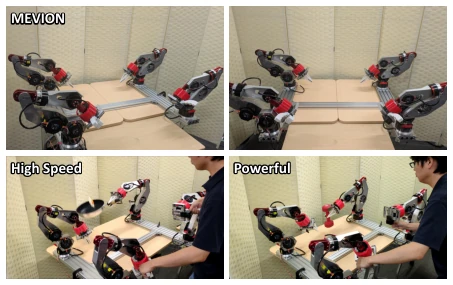
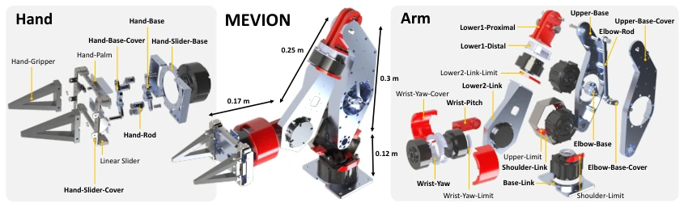
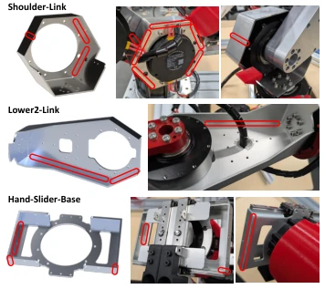
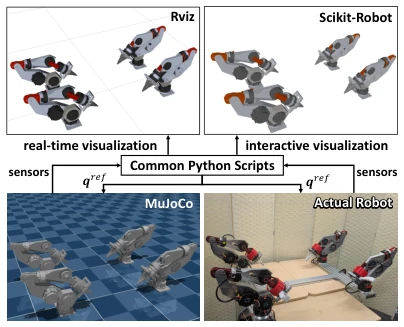
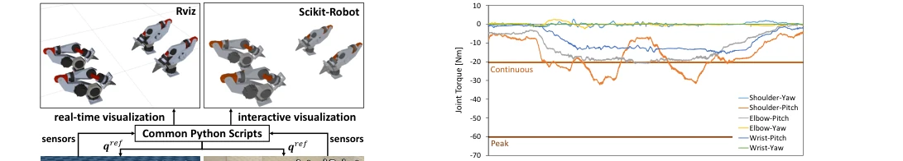
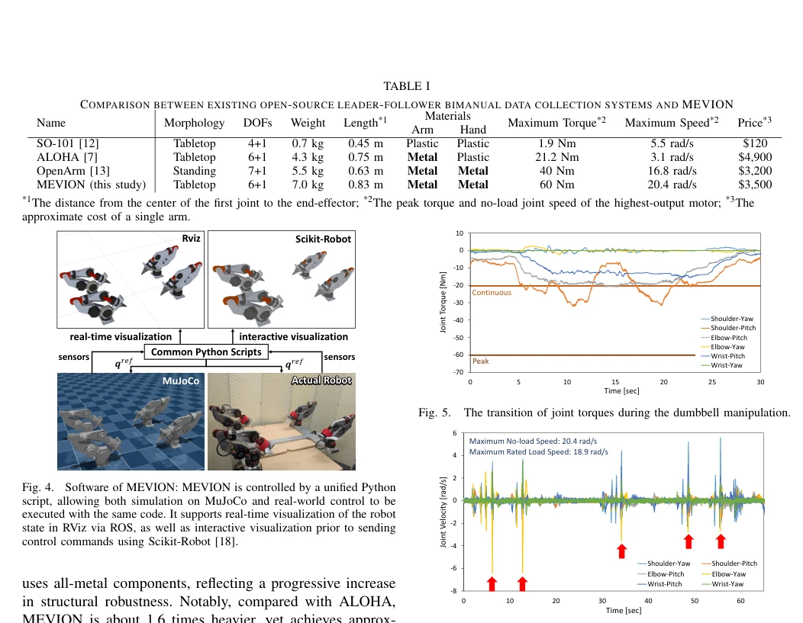
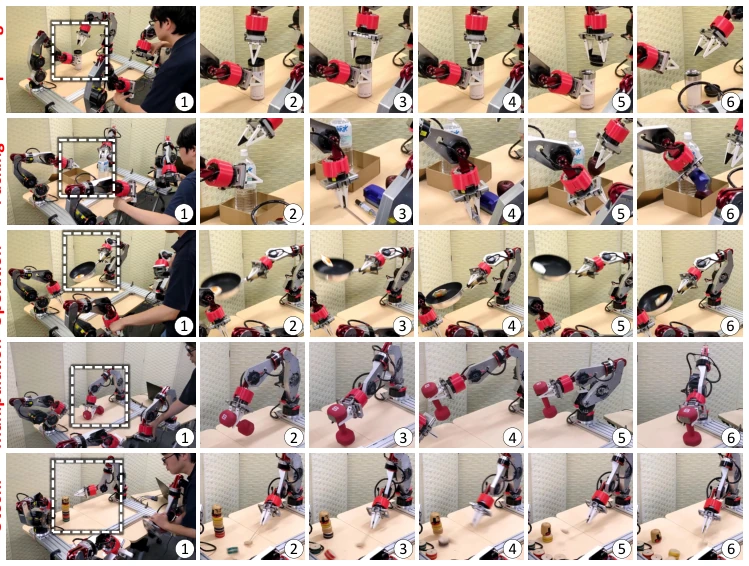
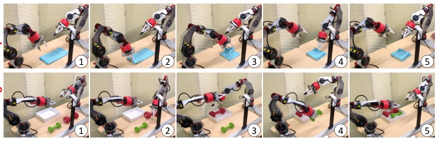

This paper throws a 'heavy hammer' into the open-source robotics community. MEVION attempts to carve out a new battlefield outside ALOHA [7]'s comfort zone, forcibly raising torque and speed through sheet metal welding and closed-loop design, indeed allowing low-cost systems to handle heavy work. However, the authors treat software gravity compensation as a panacea, omitting physical balance structures, which is like walking on a tightrope under high speed and high load; safety mechanisms rely entirely on code constraints, and any calculation error leads to disaster. Although the open-source spirit is commendable, the quality control variance of sheet metal welding is large, and it must pass quality inspection before mass production. For teams wanting to conduct large-scale data collection, this is a good tool, but do not expect it to be plug-and-play like ALOHA; the pitfalls of assembly and debugging must be filled by oneself, after all, although the $140,000 investment is low, the technical threshold is not low.
With the intensifying competition in robot foundation models, data quality has become a bottleneck. Although existing ALOHA [7] is an open-source benchmark, it is limited by small servo motors, making it difficult to handle heavy objects or high-speed operations, leading to insufficient data diversity and inability to support complex task learning. SO-101 [12] is lighter but torque is only 1.9 Nm; OpenArm [13] is strong but structure is complex and non-desktop, limiting deployment flexibility. MEVION aims to resolve the contradiction between 'low cost' and 'high power', supporting more complex physical interaction tasks by enhancing hardware performance. This not only enables collecting data containing gravity and high-speed dynamics but also lowers the research threshold, promotes the implementation of imitation learning and VLA models in real physical environments, fills the gaps in force control and speed of existing systems, and meets the needs of future large-scale data collection.

Fig. 1. MEVION: Low-cost open-source data collection system for powerful and high-speed dual-arm manipulation, developed in this study.
MEVION adopts unified Python script control, supports MuJoCo simulation and real machine deployment, with high code reusability. In terms of hardware, the system consists of 17 core metal parts, utilizing sheet metal welding to integrate complex structures, reducing part count and assembly difficulty. The elbow adopts a closed-loop mechanism, motors are front-mounted, reducing distal mass and improving end-effector output. Motors selected are RobStride series, single arm max torque reaches 60 Nm, speed 20.4 rad/s. On the software level, the control loop runs at 200 Hz, adopting PD controller plus feedforward torque, utilizing Pinocchio library [19] to calculate gravity compensation, replacing ALOHA's physical balance structure. The system is compatible with ROS and RViz visualization, supports Scikit-Robot interaction. This design, while reducing costs, compensates for stability risks brought by hardware simplification through software algorithms, achieving a balance between high performance and low cost, and all parts can be purchased via e-commerce, facilitating reproduction.

Fig. 2. Design overview of MEVION: The design is divided into the arm and hand, comprising 17 essential metal components in total — 11 in the arm and 6 in the hand, three of which are fabricated through sheet metal welding to form single integrated parts with complex and large geometries.

Fig. 3. Details of sheet metal welding for the Shoulder-Link, Lower2-Link, and Hand-Slider-Base. The welded sections are highlighted in red.

Fig. 4. Software of MEVION: MEVION is controlled by a unified Python script, allowing both simulation on MuJoCo and real-world control to be executed with the same code. It supports real-time visualization of the robot state in RViz via ROS, as well as interactive visualization prior to sending control commands using Scikit-Robot [18].
Experiments include teleoperation and imitation learning. Teleoperation tested bottle cap opening, packing, wok, 3.6kg dumbbell, and Daruma toppling toy tasks, verifying high load and high-speed capabilities, joint speed reaching up to 6.5 rad/s. Imitation learning uses Action Chunking Transformer [7]; in towel folding and dumbbell packing tasks, the robot can successfully execute multiple times continuously, even adapting to slight object position tweaks. Results show that MEVION can stably output high torque, joint torque does not exceed limits, proving its feasibility in complex physical interaction tasks. Compared to ALOHA, MEVION performs significantly in heavy object and high-speed tasks, providing a new platform for high-quality dataset construction, and software open source makes subsequent algorithm improvements more convenient, promoting community collaboration.

Fig. 5. The transition of joint torques during the dumbbell manipulation.

Fig. 6. The transition of joint velocities during the Daruma Otoshi.

Fig. 7. Teleoperation experiments using MEVION: (a) bottle cap opening, (b) object packing, (c) frying pan operation, (d) 3.6 kg dumbbell manipulation, and (e) Daruma Otoshi.

Fig. 8. The results of imitation learning using MEVION: (a) towel manipulation and (b) dumbbell packing.